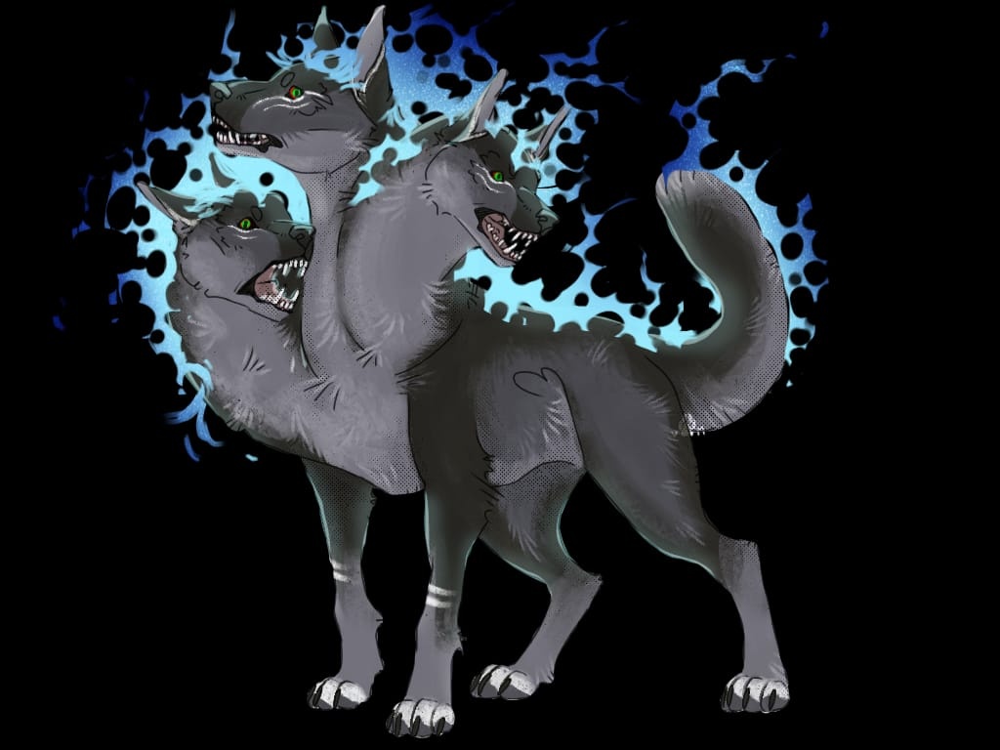
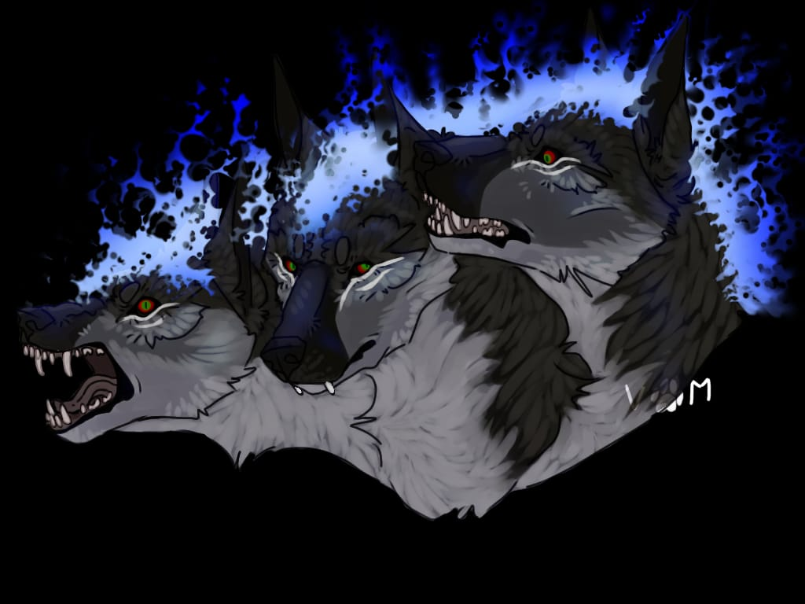

Cerberus - Anjing Berkepala Tiga Penjaga Dunia Bawah Mitologi Yunani

Cerberus adalah anjing penjaga dunia bawah berkepala tiga dalam mitologi Yunani. Tugas Cerberus adalah menjaga pintu masuk dunia bawah dan memisahkan yang hidup dari yang mati.
Deskripsi anjing menakutkan ini berbeda-beda menurut mitos yang berbeda, tetapi Cerberus biasanya digambarkan memiliki tiga kepala. Ekor yang menyamar sebagai ular, dan ular yang menonjol dari berbagai bagian tubuhnya.
Kisah Cerberus dalam mitologi Yunani yang paling terkenal adalah Pekerjaan kedua belas Heracles (Latin: Hercules). Berbagai pecahan tembikar Yunani kuno yang menggambarkan Cerberus dan Heracles pun masih ada hingga saat ini.
Tidak hanya itu, bahkan patung anjing Yunani dan Romawi bersama tuannya, dewa dunia bawah Hades, juga masih diabadikan hingga saat ini.
Cerberus dalam mitologi Yunani

Deskripsi Cerberus sangat bervariasi menurut versi-versi yang berbeda. Meskipun penggambaran tipikal menggambarkan Cerberus sebagai anjing berkepala tiga, hal ini tidak berubah.
Cerberus memiliki garis keturunan kerabat berkepala banyak. Ayahnya adalah Typhon yang bersurai ular, dan di antara saudara-saudaranya ada Lernaean Hydra, seekor ular berkepala banyak.
Kemudian ada Orthrus, seekor anjing berkepala dua yang menjaga ternak Geryon dan Chimera, dengan wajah tripartitnya – singa, kambing, dan ular.
Sementara Cerberus, sesuai dengan kerabatnya, juga memiliki kepala banyak. Cerberus memiliki kepala tiga, dengan sedikit pengecualian ikonografi, studi tentang simbol-simbol dan representasi visual dalam seni, budaya, dan sejarah.
Penyebutan tekstual paling awal tentang Cerberus muncul dalam Theogony karya Hesiod, dengan anjing tersebut digambarkan sebagai “Cerberus yang memakan daging mentah, anjing Hades yang bersuara kurang ajar, berkepala lima puluh, tak kenal lelah dan kuat.”
Menurut Pindar, Cerberus memiliki seratus kepala yang lebih mengesankan. Namun, penulis selanjutnya cenderung memberi Cerberus hanya tiga kepala.
Yang menarik adalah versi Latin Horace. Dalam versi itu, Cerberus digambarkan dengan kepala anjing tunggal yang disandingkan dengan seratus kepala ular.
Sementara itu Apollodorus mengambil pendekatan yang berbeda. Ia menghubungkan Cerberus dengan tiga kepala anjing sambil mengisi punggungnya dengan bermacam-macam kepala ular.
John Tzetzes, yang mungkin terinspirasi oleh Apollodorus, melengkapi Cerberus dengan lima puluh kepala, tiga di antaranya adalah kepala anjing, sisanya adalah kepala makhluk lain.
Representasi artistik Cerberus paling sering terdiri dari dua kepala anjing, terkadang terbatas hanya pada satu atau, pada kesempatan langka, tiga.
Salah satu penggambaran paling awal, yang diukir pada cangkir Korintus dari Argos yang berasal dari tahun 590–580 SM, menggambarkan Cerberus dengan satu-satunya kepala biasa.
Versi Cerberus berkepala tiga muncul pada cangkir Laconian dari pertengahan abad keenam SM. Yang menonjol adalah penggambaran menawan yang terukir di amphora Vulci dari tahun 525–510 SM.
Pada ukiran tersebut, Heracles terlihat menaklukkan Cerberus berkepala dua. Setiap kepala mempunyai ular yang menonjol, sementara ekor ular mengikuti di belakang.
Cerberus muncul dari sebuah lengkungan yang menandakan istana Hades, dengan sebuah pohon yang melambangkan hutan suci Persephone di dekatnya.
Athena berdiri paling kiri, dengan tangan terentang, dalam pemandangan yang dijalin secara rumit dengan simbolisme mitis.